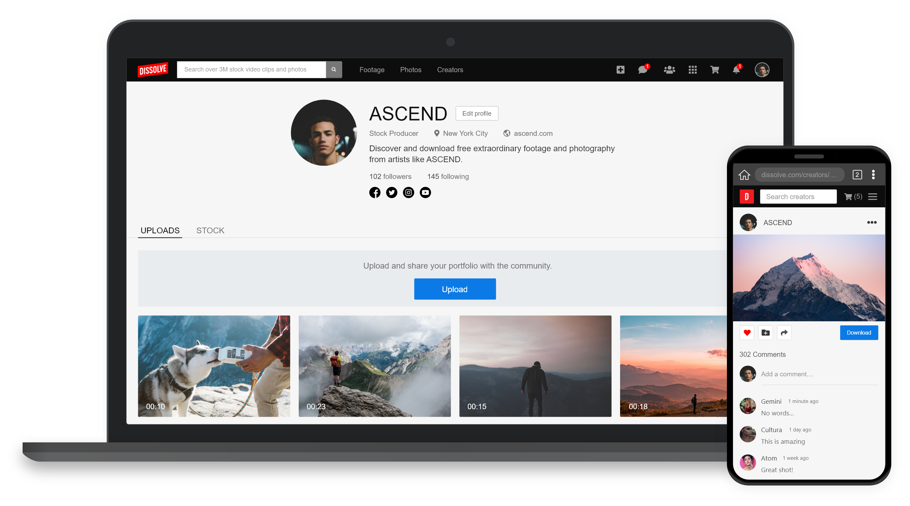
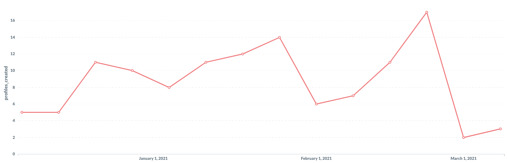
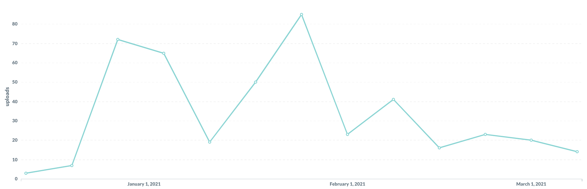
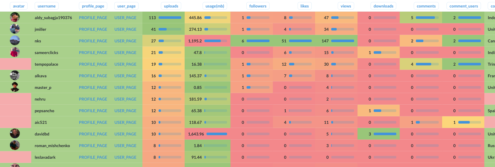

Reinforcing Dissolve's user base and digital asset library
My Roles
- Research
- UI/UX Design
- Project Management
- Team Coordination
- Quality Assurance
My Team
- Product Manager
- Data Scientist
- Development
- Marketing
- Content
Technologies Used
- Adobe XD
- Trello
Dissolve – Stock footage and photography
Dissolve Inc. is an e-commerce platform for stock footage and photography.
Users are typically creative nomads, production studios, and anyone who uses digital media in their personal or commercial projects.
Some clients include Disney, Netflix, and Warner Brothers.

Pressure to innovate
Competitors undercut prices and are expanding into other digital services to attract a broader audience.
Additionally, 'Free use' media is disrupting the industry, affecting sales and directing traffic away from Dissolve.
Product strategy
The plan is to reinforce Dissolve's user base and digital media library by integrating 'free use' media into its e-commerce platform.
Simultaneously, we'll re-engage existing users by integrating them into this new functionality.

Reverse engineering existing solutions
I deconstructed existing applications that have years of user research and data embedded into their user experience.
This process allowed me to identify key product components and gain valuable insight into proven UI and UX strategies.
Identifying components
The platforms I researched typically have their users manage their content in the profile page.
Dissolve didn't have a profile page, so I designed one referencing this example.
Adapting to product requirements
- Design an interface for uploading 'free use' media assets
- Fascilitate user retention by implementing social and content engagement
- Integrate existing stock media contributors and customers
- Adhere to Dissolve's UI pattern library for visual consistency
Accomodating all user types
The challenge of making the profile page accessible for multiple users was resolved by adapting the tabbing system to switch between 'free' and 'paid' content.
Uploading 'free use' media
The upload tool can ingest multiple files at a time, and users can attach metadata to improve SEO.
We encourage everyone to review their submissions carefully, and give them the option to un-check 'free use'.

Enhancing the user experience with machine learning
Image recognition is embedded in the upload process and automatically generates keywords for submitted content.
This helps users speed up their workflow and helps to provide accurate results when searching the site for specific content.
Detecting sensitive content
Image recognition is equipped to detect and censor sensitive content, but users have the ability to view them at their own discretion.
Content moderators can remove censors, or permenantly delete content that violate the upload terms.
Integrating stock contributors
The stock tab lets contributors display their stock media in their profile page, and also exposes the new creative audience to the idea of monitizing their media assets.
Technical challenges
- The contributors upload portal is hosted on a seperate server than the commerce site.
- Profile pages are accessed from the commerce site, and are only associated with commerce accounts.
- Stock media is only associated with contributor accounts.
- Contributor and commerce accounts are not associated with each other.
- Not every contributor has a commerce account because they are mainly used by customers to purchase stock.
Connecting stock products
The 'Add stock' tool is an interim solution that lets contributors manually connect their stock media to their profile page.
The first step prompts contributors to search their alias.
Next, contributors review and confirm the resulting stock library.
Finally, contributors must verify themselves by logging into their contributor account.
The products will be displayed in the stock tab after successful verification.
Interacting with content
Initial state
Video thumbnails have a duration stamp to help users identify videos against photos.
Hover state
On hover, video thumbnails will preview and reveal primary actions that enable users to like, share, download, or add to a collection.
3 dot menu
These secondary actions allow content creators to manage their content.
Viewing content in detail
Clicking on a thumbnail redirects users to a detailed page, allowing them to view an enlarged version, post comments, and access the same controls available on the thumbnail.
Users routinely browse other options before deciding which media assets they want to use. The Similar content and Keywords section enables them to discover related content.
Discovering profiles
The profile index features both contributor and creator profiles.
Each profile displays content samples to fascilitate browsing.
Developer hand-off
I use Trello project management software to document developer instructions, plan development sprints, and assign projects.
Our team utilizes agile methodology to develop and iterate new features.
In this example, we were able to quickly change the default tab for contributor profiles.
Outcome
Dissolve Creators™ is under development. See it live!
Creator profiles deployed in January 2021. New user profiles are trickling in and are being created everyday. So far, over 300 profiles were created without any marketing campaigns launched.
Since inception, creators have uploaded over 400 media assets.
Here's a detailed look at some of our top creators:
